Bienvenido a SymphonySpark
En SymphonySpark, creemos que la música es un lenguaje universal que tiene el poder de trascender fronteras y unir corazones. Nuestra misión comenzó con una idea simple pero profunda: encender la chispa de la pasión musical en todos, desde principiantes hasta músicos experimentados.
Fundada por un grupo de entusiastas de la música y expertos de la industria, SymphonySpark ha crecido hasta convertirse en un nombre de confianza en el mundo de los instrumentos musicales. Nuestro compromiso con la calidad, la innovación y la satisfacción del cliente nos distingue. Ofrecemos una amplia gama de instrumentos, cada uno cuidadosamente seleccionado para cumplir con los más altos estándares de artesanía y calidad sonora.
Explora Nuestros Instrumentos
En nuestro sitio web encontrarás información detallada sobre la variada gama de instrumentos que ofrecemos, incluyendo:
- Instrumentos de Cuerda: Violines, Guitarras, Violonchelos y más.
- Instrumentos de Viento: Flautas, Clarinetes, Saxofones y más.
- Instrumentos de Teclado: Pianos, Teclados, Sintetizadores y más.
Cada página de producto proporciona detalles completos, especificaciones y opiniones de usuarios para ayudarte a tomar una decisión informada. Ya sea que estés buscando comprar tu primer instrumento o agregar a tu colección, SymphonySpark es tu destino ideal.
Nuestro Alcance
Nos enorgullece servir a músicos de todo el mundo. SymphonySpark ofrece envíos a México, Estados Unidos y Europa, asegurando que, sin importar dónde te encuentres, puedas acceder a los mejores instrumentos musicales con solo unos clics. Únete a nosotros en SymphonySpark y deja que seamos parte de tu viaje musical. Descubre el instrumento perfecto que resuene con tu alma y te ayude a crear tu propia sinfonía.
 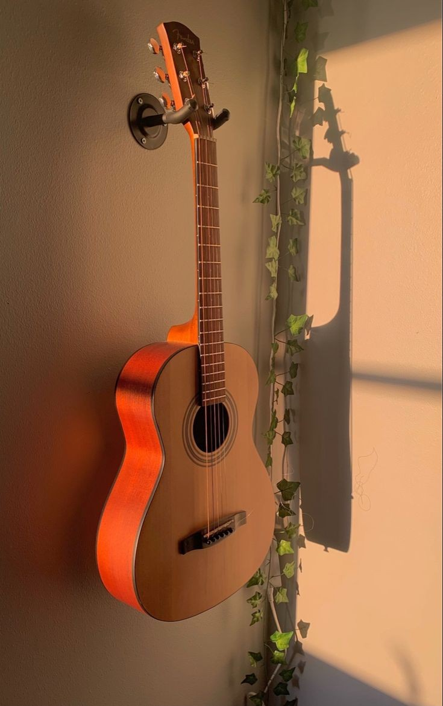
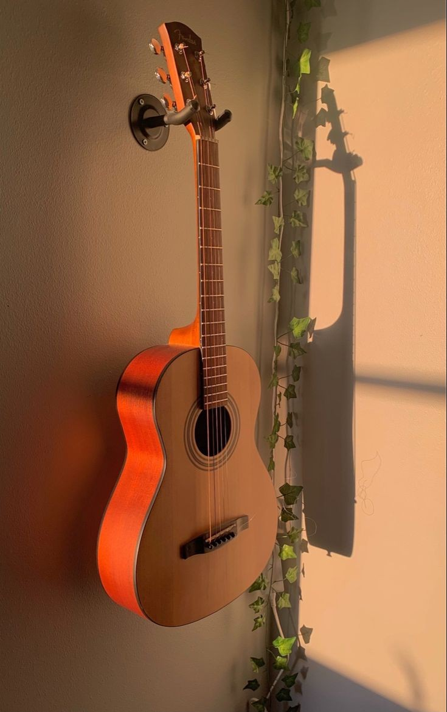
 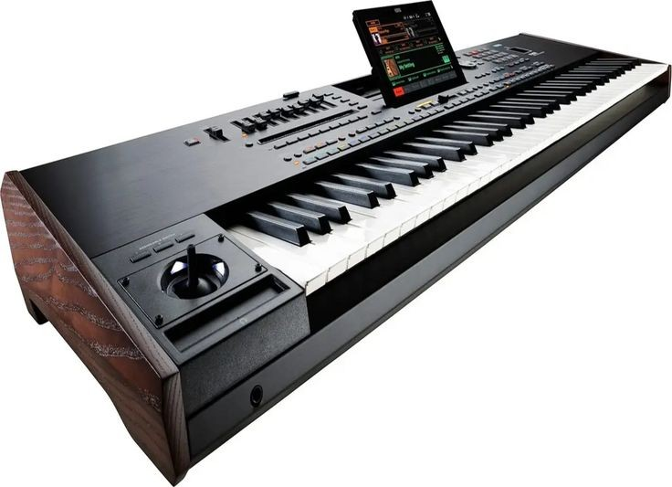
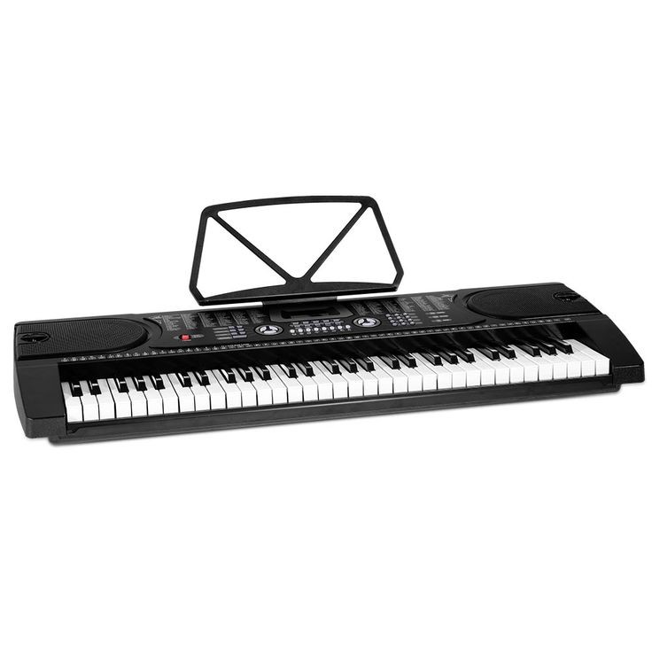
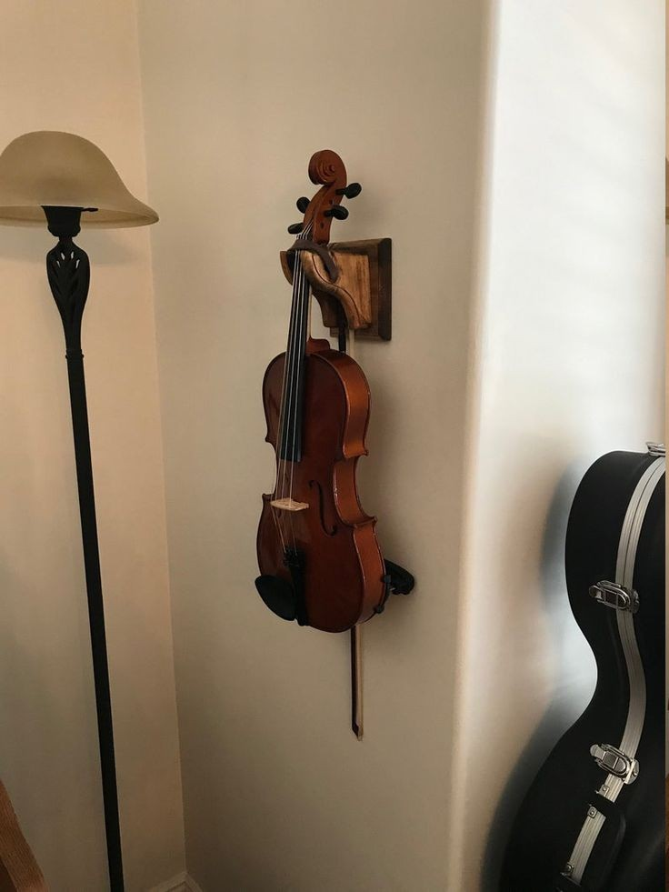
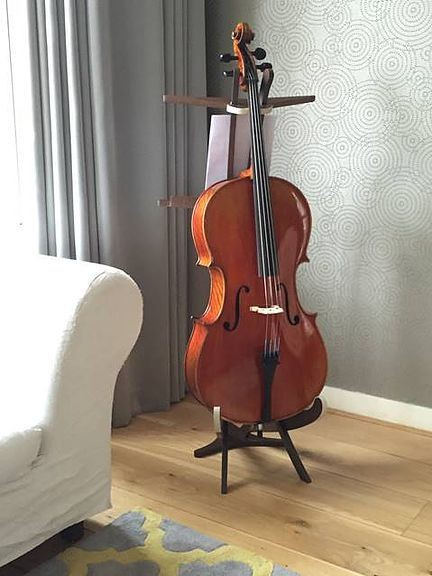
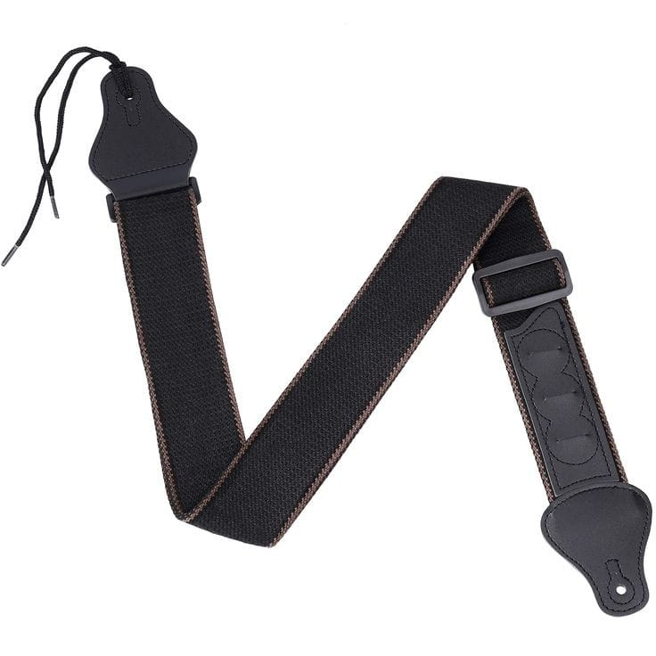
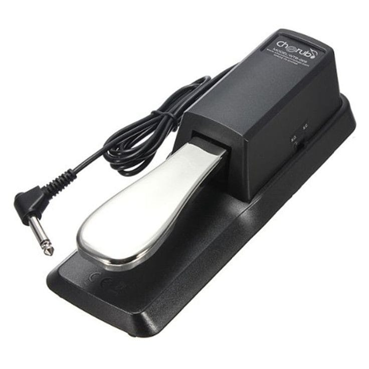
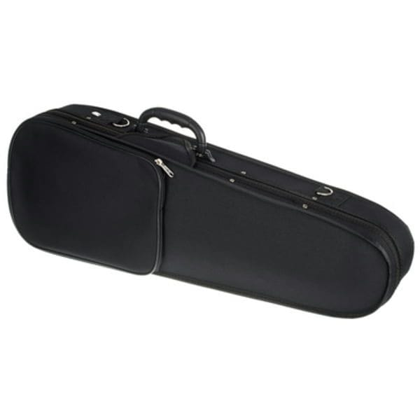
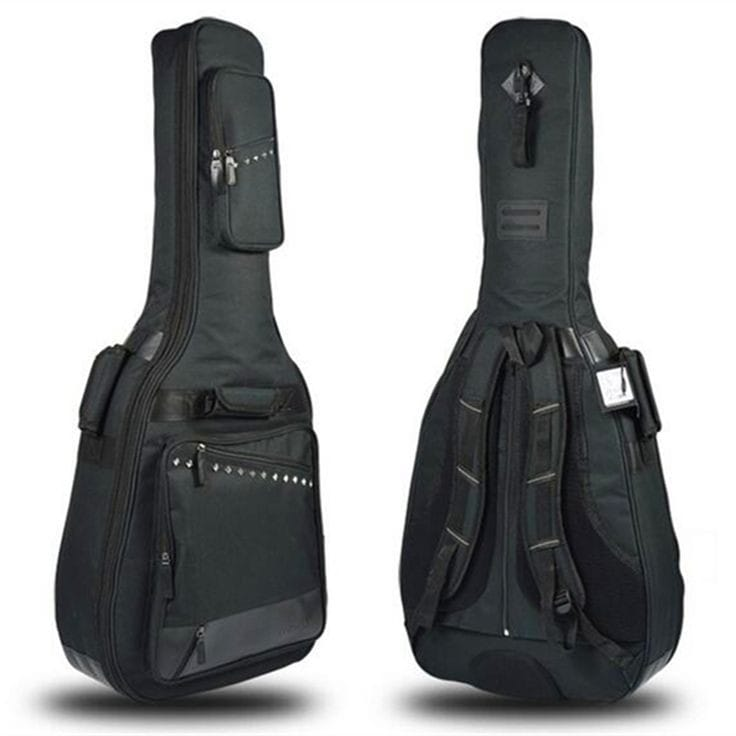
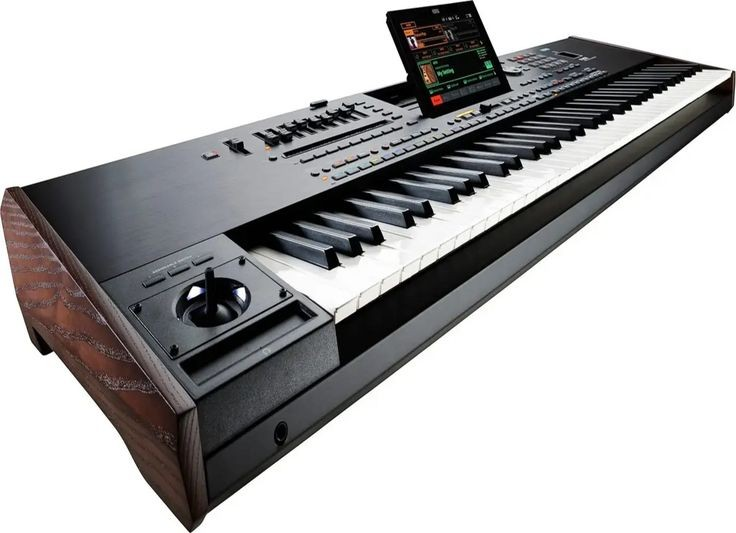
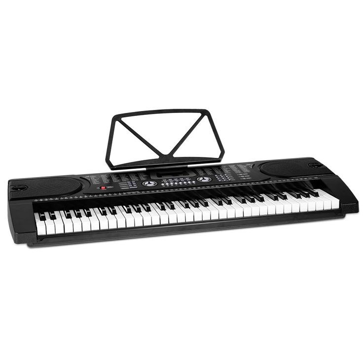
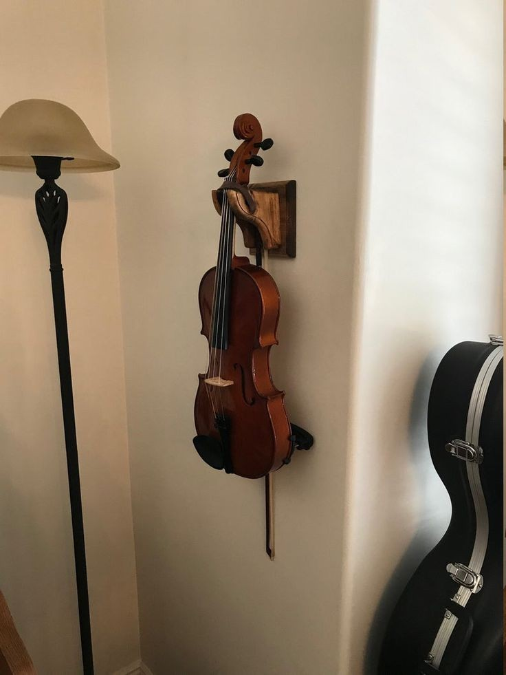
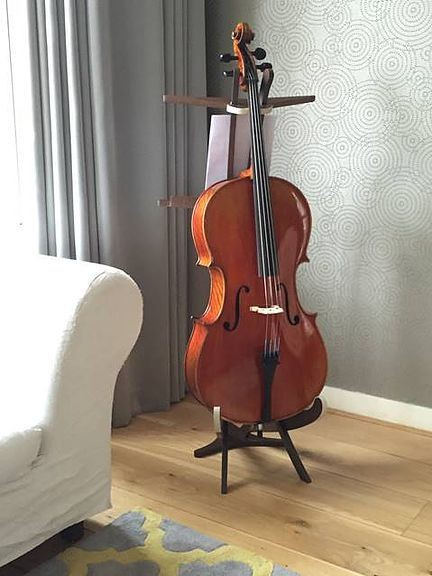
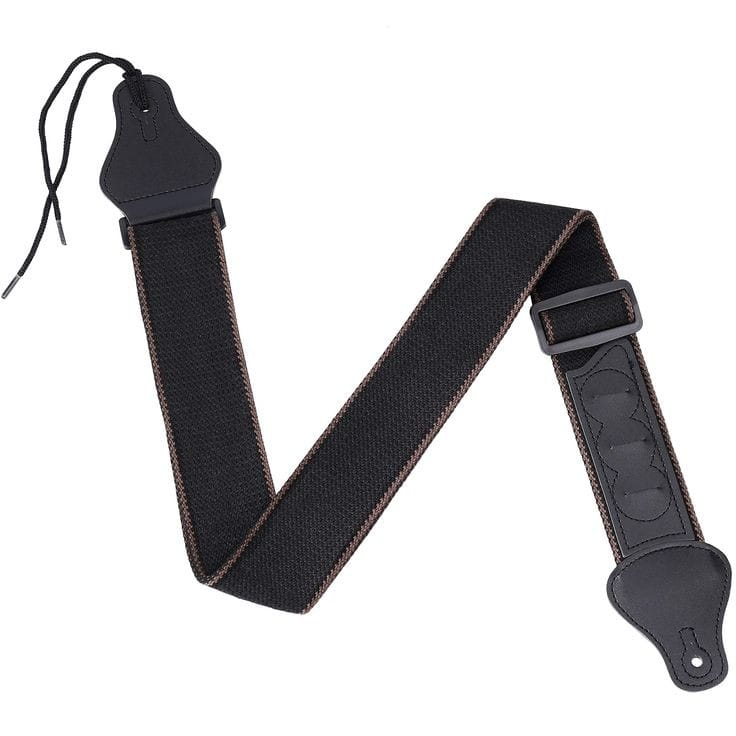
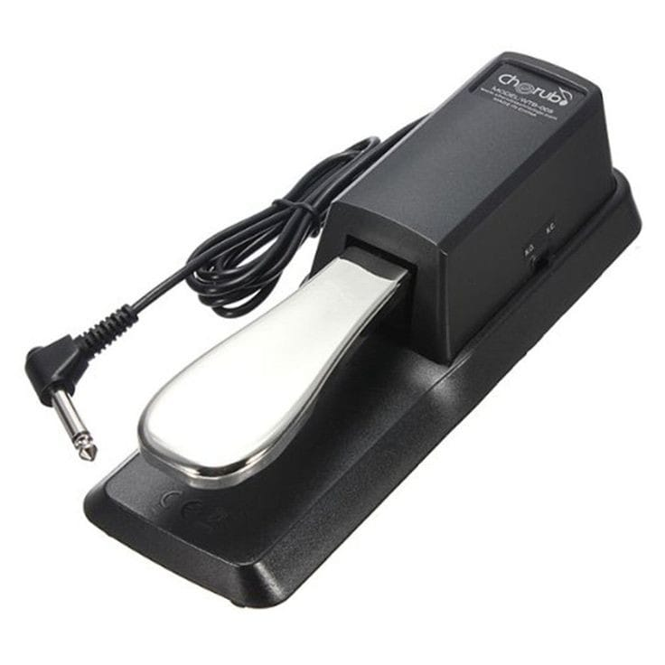
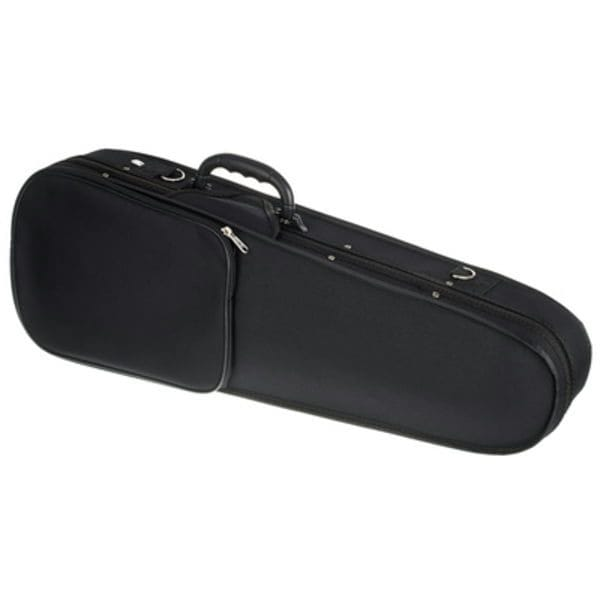
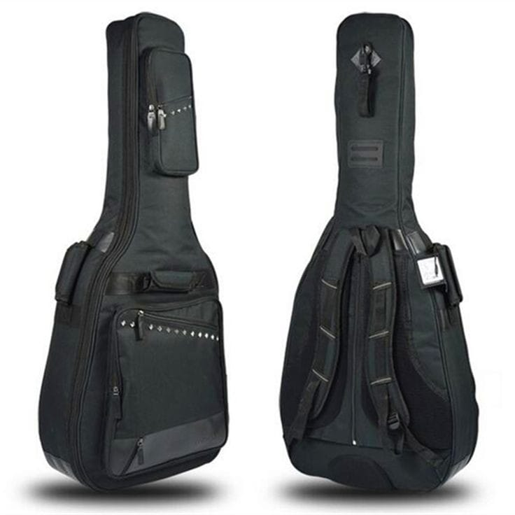